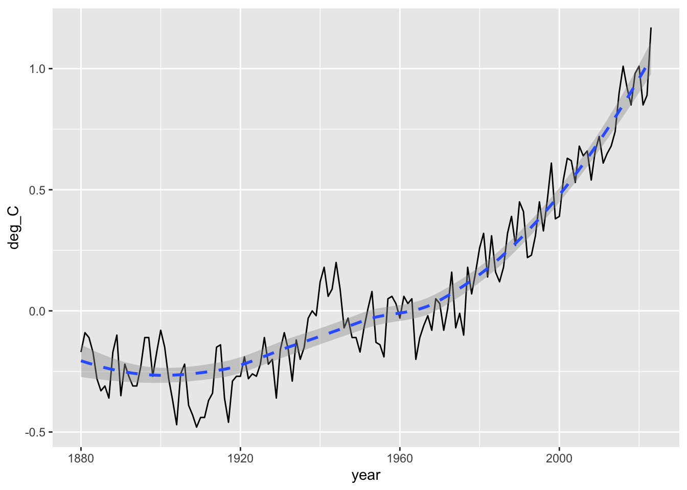
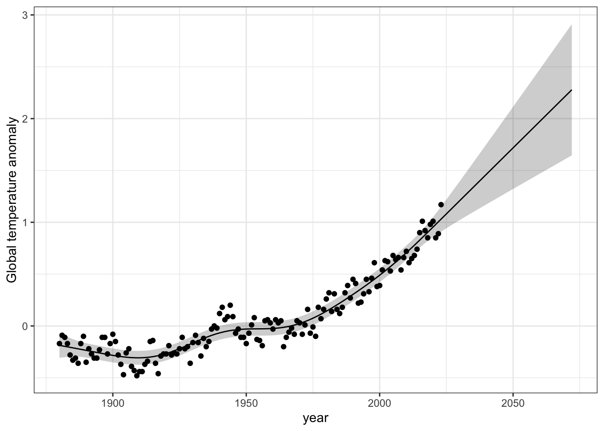

Learn about the history of our perspective on global warming.
Use R to display estimates of global temperature anomalies.
Describe the current temperature trajectory.
Compare and contrast changes in temperature between humans and Earth.
Background reading: Hansen et al. (2012). Perception of climate change. Proceedings of the National Academy of Sciences, U.S.A.
3.2 Background
The year that you were born was much warmer than usual–and it won’t ever be that cool again in your lifetime.
Earth is getting warmer due to human activities, it will push it well beyond what earth has experienced in hundreds of thousands of years. How and why Earth is warming has been known for many decades. In the early 1980’s, even Exxon’s scientists accurately predicted the global warming that has occurred because we failed to act to change our behavior.1
In this exercise, you’ll graph data from the National Centers for Environmental Information, part of NOAA (US Dept of Commerce). These temperatures are anomalies from a long term mean. The reference they use is the period from 1951-1980.
Using the R script, you will construct a 95% confidence interval on expected mean surface anomalies. A “95% confidence interval of a mean” is an interval, if so constructed, that would tend to include the true mean about 95% of the time, given many, many repeated experiments conducted under identical conditions. It is based on frequentist statistical methods. It is actually pretty difficult to interpret, but it is a standard measure of uncertainty. You will construct such an interval for past and future global surface temperature anomalies.
Overthinking:Frequentist statistical methods (those that you will all attempt to learn in intro stats class) give you a P-value, which is the probability of your data or more extreme data, given that your null hypothesis is true (i.e., your model is correct). That’s weird. The data are real - they don’t need a probability. A 95% confidence interval is an interval that we construct in a way where we would capture a “true” effect 95% of the time we repeat the same experiment under the same conditions. In contrast, Bayesian statistics would give us what we actually want: the probability that our model or hypothesis is correct, given our data. That is called conditional probability and is what a Bayesian analysis would give you. We might do that later in the course.
3.3 Activity
In this activity, you will download and import data, and then make a forecast about future temperatures. That forecast will include an expected value and a measure of uncertainty. The expected value is the most likely value, but we also acknowledge that any time we estimate a most-likely value that there is always uncertainty.
Below, we set up or work environment, load data, work with data, and then save deliverables. This work flow will be natural after a while.
3.3.1 Set up
First, if you have not already done so, create a script file that you will call global_anomalies_YourUniqueID.R.
After starting a script, we always select the appropriate project and working directory. I do this by…
…glancing at the upper right corner:
RStudio shows which project you are using in the upper-right corner
…and by looking in the File tab in the lower right pane - that should be your working directory, which should be Rwork.
The next thing we do is load packages that we know we will need. Remember, you only need to install a package onto your computer once. We load contributed packages in each session that we need them. In this course, you should always load tidyverse, at a minimum.
## load R packageslibrary(tidyverse)
── Attaching core tidyverse packages ──────────────────────── tidyverse 2.0.0 ──
✔ dplyr 1.1.4 ✔ readr 2.1.5
✔ forcats 1.0.1 ✔ stringr 1.5.2
✔ ggplot2 4.0.0 ✔ tibble 3.3.0
✔ lubridate 1.9.4 ✔ tidyr 1.3.1
✔ purrr 1.1.0
── Conflicts ────────────────────────────────────────── tidyverse_conflicts() ──
✖ dplyr::filter() masks stats::filter()
✖ dplyr::lag() masks stats::lag()
ℹ Use the conflicted package (<http://conflicted.r-lib.org/>) to force all conflicts to become errors
Make sure the file remains in the same simple format, “comma separated values” (.csv).
Put global_surface_anomalies_2025.csv in your working directory, Rwork.
Open global_surface_anomalies_2025.csv in a spreadsheet application. Don’t save the file in the spreadsheet application. Do not save it in the spreadsheet application because it will try to change the format.
With the file open, learn what is on
the first three lines
the fourth line
the remaining lines.
Do not save the file in the spreadsheet application. Just close and don’t save it - it will still be there, unchanged.
Continue to make sure the file remains in the same simple format, “comma separated values” (.csv).
We import or “read in” the data so that R can work on it. Here we put it in an object called temps. We skip lines in the file
# read in datatemps <-read.csv(file ="global_surface_anomalies.csv", # full file nameskip=3, # skip these lines because they contain metadata.header =TRUE# Tell R that the first row is column namaes ) # last parenthesis
3.3.3 Finding out information about the temperature anomalies
Next we take a peek at the data with a summary.
summary(temps)
year deg_C
Min. :1880 Min. :-0.48000
1st Qu.:1916 1st Qu.:-0.20000
Median :1952 Median :-0.04500
Mean :1952 Mean : 0.06771
3rd Qu.:1987 3rd Qu.: 0.28000
Max. :2023 Max. : 1.17000
This shows us the minimum, maximum and mean of each numeric variable.
It also shows us the 1st, 2nd, and 3rd quartiles. The median is the 2nd quartile. Quartiles are three divisions in ranked data, such they divide the data into four equal parts, or quarters. The 1st quartile is the value that divides the lowest 25% of the values from the larger values. The 2nd quartile (i.e.) is the value that divides the lower 50% from the upper 50% of the observations. The 3rd quartile is the value that divides the highest 25% of the observations from the lower values.
3.3.4 Minimum and maximum
I’d like to know when the minimum and the maximum occurred. To find this out, I’ll use a two step process: I will find the min and the max, and then I will use those to take a subset of the data frame where the anomaly is equal to either the minimum or equal to the maximum.
First, I find the minimum and the maximum.
## get the min and maxmin.anomaly <-min(temps$deg_C)max.anomaly <-max(temps$deg_C)
Now, I will use these to take a subset of the data frame where the anomaly is equal to either the minimum or equal to the maximum. The “OR” operator is the vertical line that programmers call a pipe. On your keyboard, it is above the return or enter key.
## use the min and the max# note the two equal signs, a pipe, and then two more equals signs.subset(temps, deg_C==min.anomaly | deg_C==max.anomaly )
year deg_C
30 1909 -0.48
144 2023 1.17
These show us all of the entries in our data that the anomaly is equal to the minimum OR equal to the maximum.
3.3.5 Using a year
Here I find out the average temperature anomaly in the year I was born. I want YOU to find out the anomaly in the year you were born.
## Find the anomaly in the year you were bornsubset(temps, year==1960) # use your year with two equal signs
year deg_C
81 1960 -0.03
In my birth year, it was just a touch below the 1951-1980 average.
3.3.6 Plotting information
Here we are going to start visually examining the anomalies.
We will create a linegraph using ggplot(). Our first step will create the graph, but it won’t display it right away. I include comments on each line to remind you what everything does.
## we will create a plot object and stick it in "p"p <-ggplot(data=temps, # the data frame to use## aes() stand for "aesthetics"aes(x=year, y=deg_C), # define x and y variables to plot ) +# closing parenthesis and add a plus sign to add another graphical elementgeom_line() # the type of graph to plot using x and y
If you do this correctly it will seem as though nothing happened. If you did something wrong, you might get an error message in the console. If R can’t find the function “ggplot”, that is because you didn’t load tidyverse (or ggplot2 which is a subset of tidyverse). Another common error is an incomplete statement that might come from a missing parensthesis or something. In that case, R might think that you are not finished making your statement and it will keep adding plus signs so that you can finish your coding statement.
Now we display the graph.
p
Here we add a trend line using a fancy statistical smoothing technique. By default, it will include a grey uncertainty region.
## add a trend linep +geom_smooth(linetype="dashed")
`geom_smooth()` using method = 'loess' and formula = 'y ~ x'
Here we add prettier, more descriptive labels. Add a line for the anomaly in 2002.
# first find the anomaly in 2002anomaly.2002<- temps$deg_C[temps$year==2002]anomaly.2002
[1] 0.63
p +geom_smooth() +labs(y="Surface temp. anomaly (deg C)", subtitle="Relative to average 1951-1980" ) +geom_hline(yintercept = anomaly.2002, linetype=3)
`geom_smooth()` using method = 'loess' and formula = 'y ~ x'

3.4 Predicting future anomalies
Major goals of science are understanding and prediction. We could spend a long time discussing the connection between these two, but form now, we just want to forecast want our future might look like.
The statistical details of this are way beyond this course, and they are not even the way you would do it if you were serious about. Nonetheless, it won’t be too far off, and the intuitive part applies generally to making any set of predictions. We will merely ask the computer to do some math to accomplish the following:
create an educated guess for the temperature trend. This will include,
uncertainty that comes from how much the anomalies bounce up and down from year to year, and
a trend that comes from averaging nearby values.
information that nearby years may be more similar to each other than years that are really far apart.
given the observed uncertainty and the trend, make an educated guess for future obervations, taking into account that each future year adds uncertainty that we can only guess at.
Make a figure showing the future forecast.
So, lets start with step one. and create a statistical model of the observations. We start by loading another package.
## Load a necessary R packagelibrary(mgcv) # stands for "Mixed Generalized Additive Model Computation Vehicle"
Loading required package: nlme
Attaching package: 'nlme'
The following object is masked from 'package:dplyr':
collapse
This is mgcv 1.9-3. For overview type 'help("mgcv-package")'.
Now we ask R to fit the model. Don’t worry about the details of the code. You can ask me if you are interested.
## Create the modelmod <-gamm(deg_C ~s(year), # "deg_C as a function of yeardata=temps, # data framecorrelation =corCAR1(form=~year), # specify autocorrelation among samplesmethod="REML"# fit using restricted maximum likelihood )
Next we have to decide what years we want predictions for. Let’s go for 50 more years, to 2072
## years for fit and predictionyears =data.frame(year=1880:2072)
Now we apply the model to past and future years and make a data frame and keep the uncertainty estimates it generates. We also combine our specified years with the model.
## include uncertainty with se.fit = TRUEpreds <-data.frame(predict(mod$gam, newdata=years, type="response", se.fit=TRUE) )# combine columns of data framesmy.predictions <-cbind(years, preds)
Let’s look at the first three rows of what we’ve made.
# first three lines , and all columnsmy.predictions[1:3, ]
year fit se.fit
1 1880 -0.1871517 0.06106168
2 1881 -0.1918986 0.05677760
3 1882 -0.1966483 0.05272457
This shows that the first column is the year, the second (fit) is the expected local estimate, and the third (se.fit) is the estimate of the uncertainty, which is the standard error of the expected value.
Now we’ll create 95% confidence intervals for each year. Confidence intervals are intervals which would contain the “true” value (if there is one) a specified proportion of times, if you repeated the experiment a really, really large number of times. Ninety-five percent confidence intervals exclude the lowest 2.5% and the upper 97.5% regions.
### Create 95% confidence intervalscrit.t.low <-qt(0.025, df =df.residual(mod$gam))crit.t.high <-qt(0.975, df =df.residual(mod$gam))### this requires that you loaded the tidyverse packagemy.predictions <- my.predictions %>%# my data## transform the data set to include two new columnstransform(upper.conf.lim=fit + (crit.t.high * se.fit),lower.conf.lim=fit + (crit.t.low * se.fit))### ## view the first three rowsmy.predictions[1:3, ]
Now we see we’ve added upper and lower confidence intervals. Next we’ll create a graph of our predictions, using several particular graphical features.
## basic data and x, y valuesg <-ggplot(data = my.predictions, aes(x = year, y = fit)) +## adding a wide region or band (a ribbon)geom_ribbon(aes(ymin = lower.conf.lim, ymax = upper.conf.lim, x = year), alpha =0.2, fill ="black") +## add the expected local trendgeom_line() +## adding the points for each yeargeom_point(data = temps, mapping =aes(x = year, y = deg_C),inherit.aes =FALSE) +## add a better label for the y axislabs(y ="Global temp. anomaly") ## simplify the image
Now we show the graph we created.
g

The grey area represents the 95% confidence interval for the trend observed years, and also for the trend in the future years. It gets wider because each year’s uncertainty compunds with the next year’s uncertainty. [Your figure will look a little different the this one.]
Finally, we save your figure. This is the graph you should use for your assignment.
## Save a PNG file to your working directory## THIS IS THE GRAPH TO INSERT INTO YOUR ASSIGNMENTggsave("Global_temps.png", # name for your figureplot=g, ## identify which graph you want to save,height=5, width=5)
3.5 Does Earth have a fever?
In this last section, we ask whether Earth’s temperature may be a little too high by comparing it to a human who has a fever.
First we calculate the percent increase in temperature for Earth over the past 70 years and a human experiencing a serious fever.
Average temperature for humans is 37 C, and a serious fever is considered 39 C, so an increase of 2 C.
Earth’s 20th century average temperature is 13.9 C. Let’s calculate the increase since 1950.
## First we take a subset of our data set.a <-subset(temps, year==1950) b <-subset(temps, year==2022)increase <- b$deg_C - a$deg_Cincrease
[1] 1.06
Next we calculate these increases (fever and global warming) as percentage change.
## percent increase for Earthperc.Earth <- increase /13.9*100## percent increase for humansperc.fever <-2/37*100perc.Earth; perc.fever
[1] 7.625899
[1] 5.405405
So, what do you think? Does Earth have a fever? In what ways do you think comparing temperature variation of Earth to that of a human is or is not a useful thing to do.
3.6 Questions to answer
What is a temperature anomaly?
In the file “global_surface_anomalies.csv”, what is on
the first three lines?
the fourth line?
the rest of the data?
What are the minimum, median, and maximum anomalies?
When (in what year) were the minimum and maximum anomalies?
What was the global average surface temperature anomaly in the year you were born? Provide the year and the anomaly.
What does the grey band in the figure represent, and why does it get wider in future years?
Explain whether you think Earth currently does or does not have a fever, and whether comparing temperature variation of Earth to that of a human is or is not a useful thing to do.
3.7 Deliverables
Turn these into the relevant Canvas assignment before the due date.
First, put all your answers, including your graph with the confidence interval, into a .doc or .docx file and make fit on a single page. Turn in your answers and your graph to the relevant Canvas assignment Make sure that your name is on the file in the header!
Second, turn in your R script, named global_temps_YourUniqueID.R as a second file. This must NOT be a Word document. It must be a .R file.
Exxon suppressed these internal reports, and they became available only due to a lawsuit.↩︎